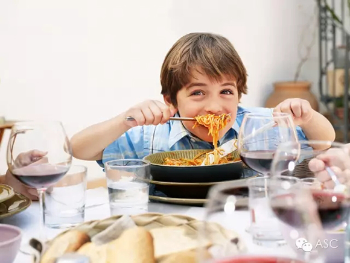
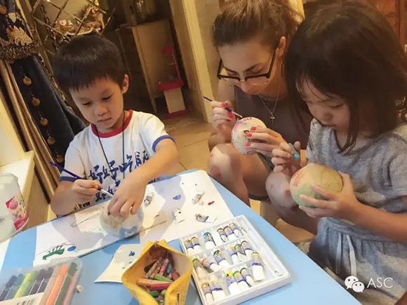
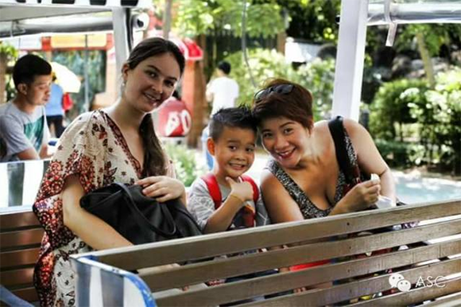

互惠动态
|
|
AUPAIR效用最大化——和老外一起生活
提示：点击上方"ASC"↑免费订阅本刊
中国人把到家里来的除家人以外的人（包括朋友）都叫“客”，所以不论是谁来，家庭主人都会以“待客”的礼节对待来者，而且越是“远道而来”的“客”越尊贵，这是一种习惯也是种文化。而正是这样一种“待客”观念使我们在认识存在于欧洲百年之久的AUPAIR（互惠生）的时候产生疑问：AUPAIR是客人，还是家人？
定位偏差难免会引起一连串的顾虑与担心。这一点上，我们可以参考欧洲的家庭，他们对AUPAIR的定位十分清晰：家庭帮手。在一个家庭中，家务劳作分工合作，家人之间互相帮助，AUPAIR并不是单纯意义上的客人，更不是雇员，而是家人。小到穿衣吃饭、大到传统文化，家人之间都会相互了解、理解、体谅、磨合、折中，从而形成每个家庭独特的“家庭文化”，AUPAIR的到来会给现有的“家庭文化”增添一抹异域风彩，使其更加丰富多彩。基于这样的理解，在实际生活中，一些微小的细节，我们便可以发掘出很多非常具有“即视感”的互惠生价值。


互惠生JAKE来自美国，他被要求帮助家庭陪一个14岁的男孩BEN练英语、做运动，发现BEN总会跟父母发很大脾气。他借陪BEN打篮球的空档询问起了原因，BEN告诉他这样做的目的就是为了“反抗”，他想让父母明白自己已经长大希望父母尊重自己的想法。JAKE根据自己的心得与体会告诉BEN要让“大人”真正相信你已经“长大”，最直接的办法就是“像个大人一样去做事”。基于此，之后一周的英语学习内容便更新成为“批判性思考”，他要求BEN去就一个论题给出自己的观点，然后就观点搜集论据、最后就每个论据进行分析看是不是可以支持最初的观点。经过几轮的演练之后，BEN霍然开朗，当父母对他提出一些要求时，他会将父母的论据进行认真思考衡量利弊，而在他这样做以后他发现：爸妈原来并不是法西斯，只是他们不相信我真的长大可以独立思考。我以前的确太幼稚了。――编者按：现在BEN已经远赴美国留学，他在给父母的邮件中提到“其他中国来的同学都还在拼命找词句充字数混及格，我轻轻松松论文已经拿A了！”可见，观念的转变既有即时的效果，也有长远的功用。

英语和中文分属两套不同的语系。中文重形重意，英文重音重义；一个只可意会不可言传，一个直截了当干脆具体。做过多年英语教育的SUSAN女士为了锻炼自己的英语口语，同时为十岁的儿子T创造一个英语环境，请了来自英国的互惠生Andrew帮忙，儿子和Andrew相处得非常融洽。但有一件事让SUSAN非常伤脑筋：Andrew的衣服总是内外衣一起放进洗衣机洗。SUSAN通过各种机会去跟ANDREW聊衣物的用途与区别、衣服可能接触到的细菌、衣服清洁的正确方法，但ANDREW仍然我行我素的把衣服一股脑儿地往洗衣机里塞，弄得SUSAN哭笑不得。经过向ASC工作人员咨询，SUSAN被告知“可以直接告诉他，内外衣要分开洗，自己的内衣尽量自己手洗。” 尽管SUSAN担心“这样说会惹ANDREW不高兴”，但她仍然照做了，结果令她感到意外的是ANDREW得知后哈哈大笑说：“我知道你最近为什么总提detergent（衣物清洁剂）了！谢谢你告诉我，真抱歉一直给你添麻烦。”――编者按：住在一起的一家人，还有什么不可以直说的呢？要相信“以诚相待，必得真心。”

ASC国际互惠生项目公众号ASCCENTER
互惠生最早起源于英、法、德国等自发的青年活动，是指给来自全世界的青年提供一个寄住在他国家庭里体验文化学习语言的机会，如今我们把国外互惠生请来家庭里，照顾自家的孩子，从小培养外文的语言环境，为孩子出国，全家移民打下优良基础，关注个【公众微信号】ASCCENTER了解更多国外有趣资讯。
ASC国际互惠生客服号ASC-CENTER
24小时客服个人微信号，对接家庭与互惠生之间的问题，对互惠生项目有陌生不熟悉或者想了解更多信息的可以关注【个人微信号】ASC-CENTER与客服详细交流。